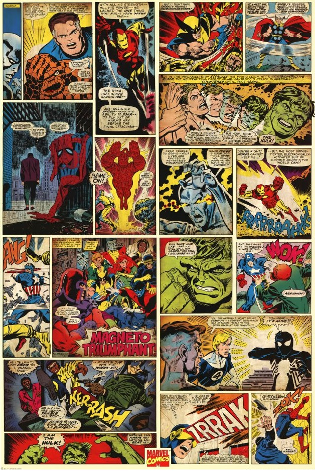

1960
Cuando el dios asgardiano Loki busca venganza contra su hermano
Thor, sus maquinaciones involuntariamente llevan al adolescente
Rick Jones a recoger Ant-Man, Avispa y Iron Man para ayudar a Thor
y Hulk, a quien Loki usó como peón. Después de que el grupo
derrotó a Loki, Ant-Man declaró que los cinco trabajaron bien
juntos y sugirieron que formaran un equipo; Avispa llamó al grupo,
Vengadores
1970
El equipo encontró nuevos personajes como Arkon en el número
(abril de 1970), y Red Wolf en el número 80 (septiembre de 1970).
Las aventuras del equipo aumentaron en alcance cuando el equipo
cruzó a una dimensión alternativa y luchó contra el Escuadrón
Supremo, y luchó en la Guerra Kree-Skrull, una batalla épica
entre las razas alienígenas Kree y Skrull y el protagonista
invitado Kree, el Capitán Marvel. Los Vengadores se disolvieron
brevemente cuando los Skrulls se hacen pasar por el Capitán
América, Thor y Iron Man usaron su autoridad como fundadores del
equipo y lo disolvieron.Los verdaderos Vengadores fundadores,
menos Avispa, reformaron el equipo en respuesta a las quejas de
Jarvis.
1980
El primer gran avance fue el colapso de Henry Pym, con sus
frecuentes cambios de vestimenta y nombre siendo sintomático de un
problema de identidad y un complejo de inferioridad.Después de
abusar de su esposa, no haber recuperado la confianza de los
Vengadores con una estratagema y haber sido engañado por el
villano Egghead, Pym fue encarcelado. Pym luego burló a Egghead y
derrotó a la última encarnación de los Maestros del Mal por su
cuenta, y demostró su inocencia. Pym se reconcilió con Avispa,
pero decidieron permanecer separados. Pym se retiró de los súper
héroes, pero regresó años más tarde.
1990
El gobierno de los Estados Unidos revocó la carta del Estado de
Nueva York de los Vengadores en un tratado con la Unión Soviética.
Los Vengadores luego recibieron un estatuto de las Naciones Unidas
y los Vengadores se dividieron en dos equipos con un equipo
suplente de reserva que respaldaba a los equipos principales.
2000
Los Vengadores recibieron la autoridad internacional de las
Naciones Unidas. Los miembros que se unieron durante ese período
incluyeron Jack de Corazones y el segundo Ant-Man. Un nuevo
Capitán Bretaña fue agregado al equipo. La historia de "Vengadores
Desunidos" siguió. Titulado Chaos, la historia presentaba la
muerte de algunos miembros y la pérdida de credibilidad del
equipo. Se revela que la culpable es la Bruja Escarlata, que se
había vuelto loca después de agonizar por el recuerdo de sus hijos
perdidos y que posteriormente perdió el control de sus poderes que
alteran la realidad. Con el equipo en desorden y la mansión de
los vengadores arruinada, los miembros sobrevivientes acordaron
disolverse.
2010
Después de que los Vengadores Oscuros de Osborn son expuestos como
criminales y su ataque contra Asgard fue frustrado, la próxima
iteración de la lista de los Vengadores consiste en Thor, Hawkeye,
Spider-Man, Wolverine, Capitán América, Spider-Woman, Iron Man y
la líder del equipo Maria Hill. Steve Rogers, evitando brevemente
su personaje de Capitán América, responde a las preocupaciones de
Luke Cage acerca de que el equipo vuelva a los viejos métodos al
otorgar el reconocimiento de "Nuevos Vengadores" a Cage como un
equipo oficial independiente de los Vengadores más tradicionales
de Stark. Bucky Barnes como el Capitán América se unió a los
principales Vengadores, mientras que Iron Fist, Power Woman y la
Mole se unieron al equipo de Cage, Spider-Man y Wolverine
manteniendo la membresía doble en ambos equipos. Rogers era una
presencia ocasional y Victoria Hand se añadió como un enlace del
gobierno para los Nuevos Vengadores con el respaldo de Rogers.